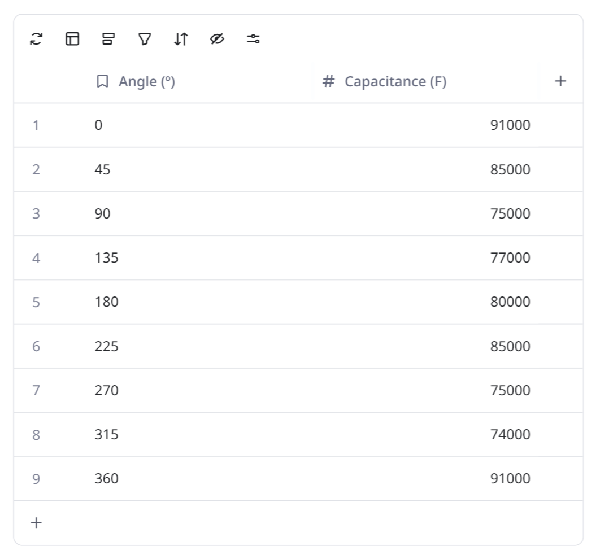
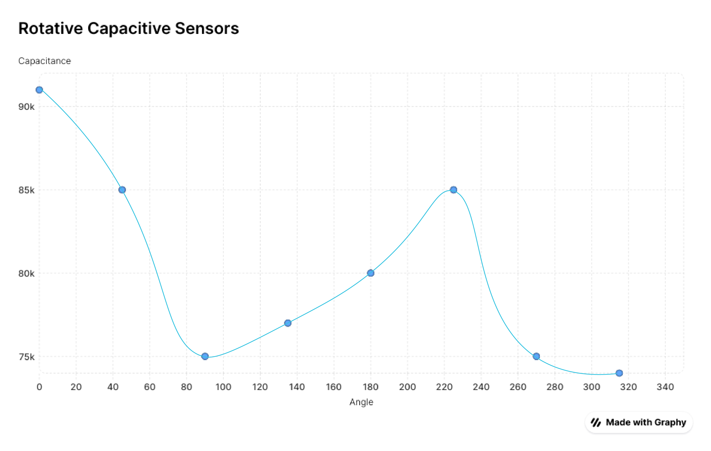

Week 6: Electronic Inputs
Assignment 1: Capacitive Sensor
During the Sensor Fabrication workshop, we created a capacitance-based sensor that responds to rotation. Initially, our idea was to let two plates rotate around a shared central axis.

However, Nathan reminded us that direct contact between the two plates would interfere with the capacitance measurement. Based on his feedback, we adjusted the design: one plate remains stationary while the other rotates around a separate axis. This way, the distance between the two plates changes as one rotates, altering the capacitance.

Therefore, we plan to use a DC motor to drive the rotation of the plate, allowing the distance between the two plates to change continuously. We also laser-cut a platform to secure the stationary plate, ensuring stability and alignment during rotation. This setup will help us achieve more consistent measurements of capacitance changes and better observe how rotation affects the sensor's response.
However, when we connected wires to the rotating plate, we found that the multiple connections easily got tangled or stuck during rotation. As a result, we were unable to rotate it continuously with the motor. Instead, we decided to manually adjust the plate to different angles and record the capacitance readings at each position.
 Assignment 2: Sound Sensor